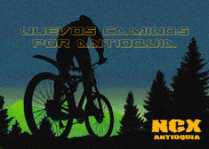
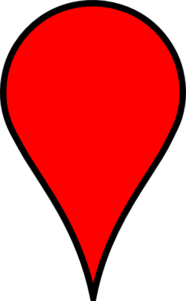

NCX Antioquia
Mapbox
My Maps
Wikiloc
Facebook
GitHub
Search:
Nuevos caminos por Antioquia
Todas la rutas de
Wikiloc
Haga click sobre el camino para abrir la ruta en
wikiloc
Sobre el icono  para ver detalles.
Pantalla completa:
Total: 12867 km
Desnivel: 154661 m
© NCX Antioquia